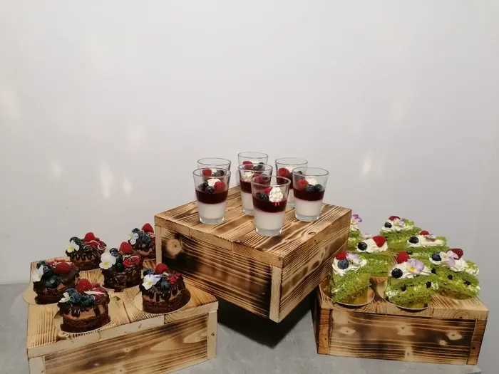

Jsme malá domácí firmička s rodinnou tradicí 🫡
Oslavy, svatby, narozeniny / svátky? Stačí zavolat!
Vezmeme vám to ka쬯칳 den (i o víkendu), a s láskou pro vás p콏ipravíme cukroví, dorty, svatební kol치캜e, a mnohé další!
Dáme si zále쬰t na tom abychom v치코 sen zm캩nili v realitu 游땘